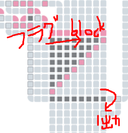
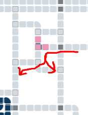
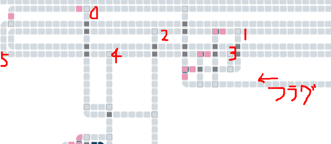
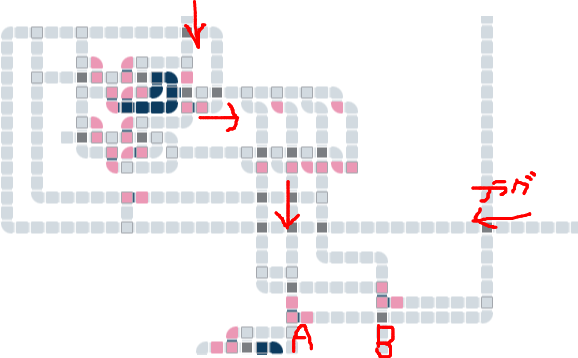
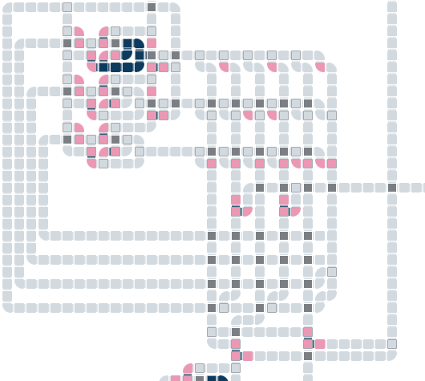
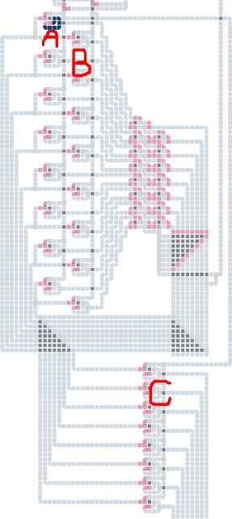
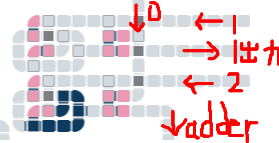
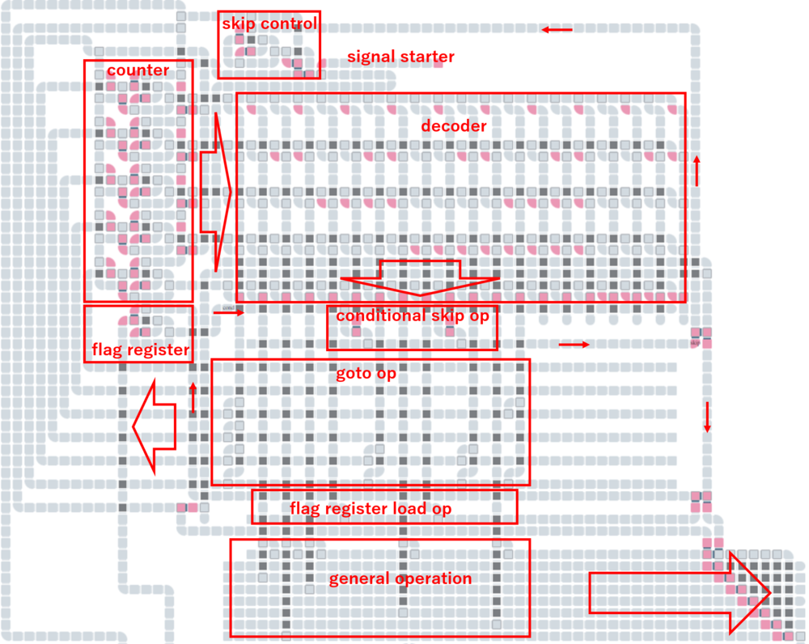

この記事はセルオートマトンによるCPU作成連載記事の18本目です。(2023/01/24)
今回は前回のフィボナッチ数列の回路を改良してきます。
ver.2では、オーバーフローしたときに1にリセットするようにしました。
加算器の最上位ビットの繰り上がりフラグの出力を拾い、繰り上がりがあったら加算結果が流れるのをブロックして、代わりに1という値を出力するようにします。また、その繰り上がりフラグが立っているときには、シグナルを2つのレジスタに流すようにして、レジスタ2つとも1にリセットするようにします。
フラグが立っているときには加算結果をブロックして1を出力の回路

フラグが立っているときには次のシグナルがどちらのレジスタ宛であっても両方のレジスタにシグナルを流すように制御する回路

回路が大きいので別ページにしました。以下のリンクから実際に試すことができます。
これでオーバーフロー時にリセットという当初要件を満たしていますが、ここから回路を改善していきます。これまでの場当たり的な回路を汎用的な再利用しやすい形に変えていきます。リファクタリングをするようなものです。
次のバージョンでは回路の作り方の考え方を変えており、次の処理を順番に実行するようにしています。動作開始時は1から始まります。
| 0 | レジスタAとBにシグナルを流す |
| 1 | フラグが立っているときには0にジャンプ |
| 2 | レジスタAにシグナルを流す |
| 3 | フラグが立っているときには0にジャンプ |
| 4 | レジスタBにシグナルを流す |
| 5 | 1にジャンプ |
回路一番上のループ回路でシグナルが実際の処理にそって流れています。1から5まで進んで、また1に戻るのをループ回路で繰り返しています。ただし、1または3ではフラグが立っているときには次に進むのではなく、0に移動するようになっています。

先ほどのバージョンではシグナルの移動に応じて処理内容が決まりましたが、次のバージョンではカウンタを1ずつ増やし、カウンタの値に応じて処理内容が決まるようにします。
カウンタは初期状態では1とします。
| カウンタの値 | 処理内容 | 次のカウンタ値 |
|---|---|---|
| 0 | レジスタAとBにシグナルを流す | 1増やす (1に進む) |
| 1 | レジスタAにシグナルを流す | 1増やす (2に進む) |
| 2 | レジスタBにシグナルを流す | 1にセット (1に戻る) |
| (上記によらず)繰り上がりフラグが立っているとき | 0にセット (0に戻る) |
カウンタの値が最大で2なので、カウンタは2ビットです。カウンタは以前作成した値の設定が可能なカウンタを使っています。フラグが立っているときはカウントアップせずに0にセットするようになっています。

ver.5では、カウンタをセットする処理を独立した処理にしています。
| カウンタの値 | 処理内容 | 次のカウンタ値 |
|---|---|---|
| 0 | レジスタAとBにシグナルを流す | 1増やす |
| 1 | 繰り上がりフラグが立っていればカウンタを0にセット | (フラグが立っていなければ) 1増やす |
| 2 | レジスタAにシグナルを流す | 1増やす |
| 3 | 繰り上がりフラグが立っていればカウンタを0にセット | (フラグが立っていなければ) 1増やす |
| 4 | レジスタBにシグナルを流す | 1増やす |
| 5 | カウンタを1にセット | - |
今回の回路ではカウンタが2ビットでは足りないので3ビットに増やします。

お分かりかと思いますが、この回路でカウンタと言っているものは、CPUでのプログラムカウンタになります。プログラムカウンタは現在実行している命令の場所を示し、命令を実行するごとに1ずつ値が増えていきます。条件分岐などがあるとプログラムカウンタが特定の値にセットされ、命令がジャンプします。
いままではディスプレイに出力する値は加算器と直結していました。そのためディスプレイに表示する内容に自由度がありませんでした。そこで、ディスプレイの手前に8ビットレジスタを設置します。レジスタCとしておきます。

| カウンタの値 | 処理内容 |
|---|---|
| 0 | レジスタAとBにシグナルを流す |
| 1 | 繰り上がりフラグが立っていればカウンタを0にセット |
| 2 | レジスタAとCにシグナルを流す |
| 3 | 繰り上がりフラグが立っていればカウンタを0にセット |
| 4 | レジスタBとCにシグナルを流す |
| 5 | カウンタを1にセット |
繰り上がりフラグが立っていたら加算結果をブロックして1という値に上書きする処理をアドホックな回路で実現していたので、ここを汎用的な処理にできるように書き換えます。
加算結果と1のどちらを採用するのかをカウンタからの信号で制御するようにします。カウンタからの信号をここでは出力制御という言い方にします。オーバーフロー発生時は加算結果を出力せずに1を出力するために、出力制御0のシグナルを流し、続けて出力制御1のシグナルを流します。
| 出力制御0 | なにも出力しない |
| 出力制御1 | 1を出力 |
| 出力制御2 | 加算結果を出力 |

処理の流れは次のようになります。最初にジャンプ命令を置いたので、カウンタは初期状態では0にできます。
| カウンタの値 | 処理内容 |
|---|---|
| 0 | カウンタを4にセット |
| 1 | 出力制御0と1にシグナルを流す |
| 2 | レジスタAとBとCにシグナルを流す |
| 3 | 出力制御0と2にシグナルを流す |
| 4 | 繰り上がりフラグが立っていればカウンタを1にセット |
| 5 | レジスタAとCにシグナルを流す |
| 6 | 繰り上がりフラグが立っていればカウンタを1にセット |
| 7 | レジスタBとCにシグナルを流す |
| 8 | カウンタを4にセット |
今回の記事の最後のバージョンです。回路の上のほうにあった制御回路を大幅に作り直しました。
条件判定をして特定の場所にジャンプする命令を3つの命令に分割しました。フラグレジスタへのロード、条件判定、ジャンプの3命令です。条件判定はいままで繰り上がりフラグと直結していましたが、汎用化するために間にフラグレジスタを入れ、フラグレジスタへのロードという命令を追加します。いまの段階ではまだ意味のない命令です。条件判定の命令では、フラグレジスタの値によって次の命令をスキップします。その次にジャンプする命令を置きます。これで条件によってジャンプするか、次に進むかの分岐ができます。
制御回路にあるプログラムカウンタは3ビットから5ビットに増やしています。4ビットで足りるのですが作りすぎました。汎用化できるように余裕を持った作りにしたので、使われていない線がいっぱいできてしまいました。
これまでのバージョンで一番上にあった周期的なシグナルを提供するループ回路もこの制御回路の中に埋め込まれています。命令のスキップを実装するためにver.3での考え方が部分的に復活し、スキップの場合にシグナルの流れが分岐するようになっています。

処理の流れは次のようになります。
| カウンタの値 | 処理内容 |
|---|---|
| 0 | カウンタを7にセット |
| 1 | 出力制御0と1にシグナルを流す |
| 2 | レジスタAとBとCにシグナルを流す |
| 3 | 出力制御0と2にシグナルを流す |
| 4 | 繰り上がりフラグをフラグレジスタにロード |
| 5 | フラグレジスタが立ってなければ次をスキップ |
| 6 | カウンタを1にセット |
| 7 | レジスタAとCにシグナルを流す |
| 8 | 繰り上がりフラグをフラグレジスタにロード |
| 9 | フラグレジスタが立ってなければ次をスキップ |
| 10 | カウンタを1にセット |
| 11 | レジスタBとCにシグナルを流す |
| 12 | カウンタを4にセット |